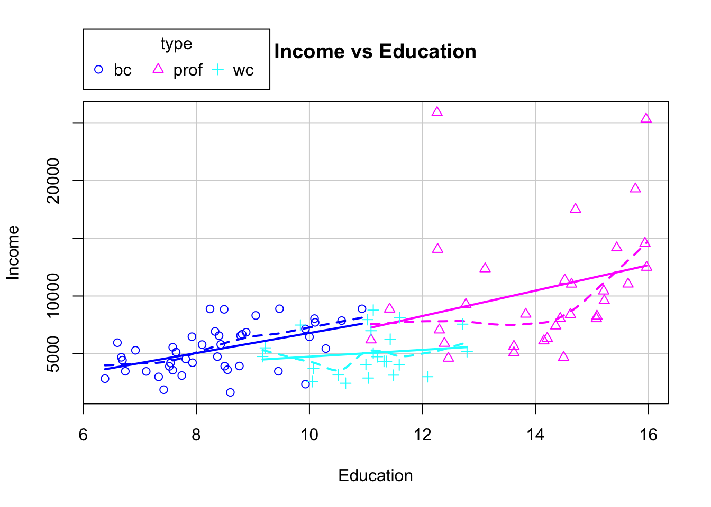
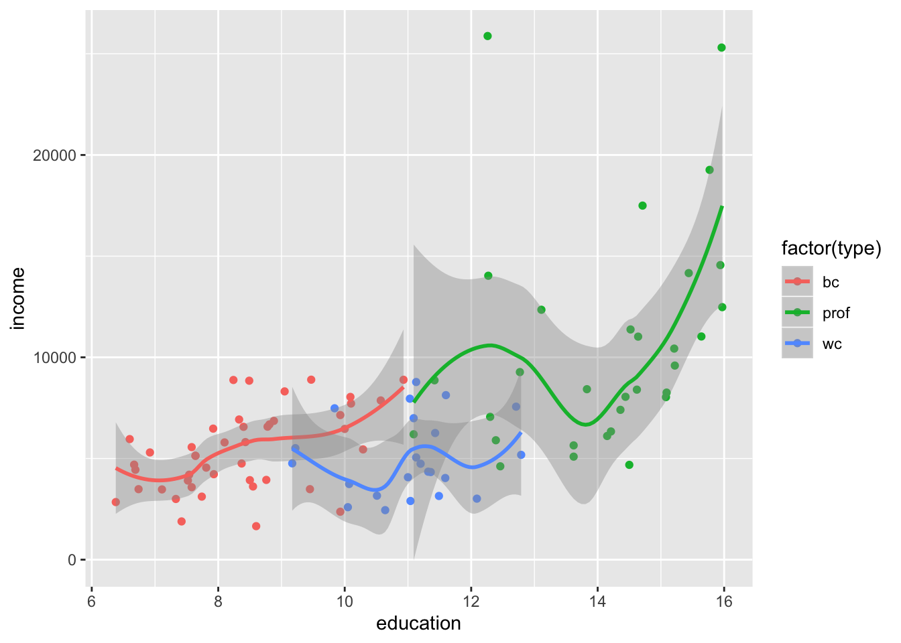

Last updated: 2020-04-09
Checks: 7 0
Knit directory: STA463_Spring_2020/
This reproducible R Markdown analysis was created with workflowr (version 1.4.0). The Checks tab describes the reproducibility checks that were applied when the results were created. The Past versions tab lists the development history.
Great! Since the R Markdown file has been committed to the Git repository, you know the exact version of the code that produced these results.
Great job! The global environment was empty. Objects defined in the global environment can affect the analysis in your R Markdown file in unknown ways. For reproduciblity it’s best to always run the code in an empty environment.
The command set.seed(20200213) was run prior to running the code in the R Markdown file. Setting a seed ensures that any results that rely on randomness, e.g. subsampling or permutations, are reproducible.
Great job! Recording the operating system, R version, and package versions is critical for reproducibility.
Nice! There were no cached chunks for this analysis, so you can be confident that you successfully produced the results during this run.
Great job! Using relative paths to the files within your workflowr project makes it easier to run your code on other machines.
Great! You are using Git for version control. Tracking code development and connecting the code version to the results is critical for reproducibility. The version displayed above was the version of the Git repository at the time these results were generated.
Note that you need to be careful to ensure that all relevant files for the analysis have been committed to Git prior to generating the results (you can use wflow_publish or wflow_git_commit). workflowr only checks the R Markdown file, but you know if there are other scripts or data files that it depends on. Below is the status of the Git repository when the results were generated:
Ignored files:
Ignored: .DS_Store
Ignored: .Rhistory
Ignored: .Rproj.user/
Ignored: lec/
Untracked files:
Untracked: docs/figure/fit_mr.Rmd/
Unstaged changes:
Modified: analysis/corona.Rmd
Note that any generated files, e.g. HTML, png, CSS, etc., are not included in this status report because it is ok for generated content to have uncommitted changes.
These are the previous versions of the R Markdown and HTML files. If you’ve configured a remote Git repository (see ?wflow_git_remote), click on the hyperlinks in the table below to view them.
| File | Version | Author | Date | Message |
|---|---|---|---|---|
| Rmd | 3f12a09 | dleelab | 2020-04-10 | new |
The Prestige data frame is the Prestige of Canadian Occupations. It has 102 rows and 6 columns. The observations are occupations. First of all, we remove all observations that have missing values for varaible ``type’’.
#install.packages("car")
library(car)Loading required package: carData#?Prestige
mydata=Prestige[!is.na(Prestige$type), ]#remove the observations with missing values for "type"
unique(mydata$type)[1] prof bc wc
Levels: bc prof wcTo have an idea about the predictor variable and the response, we can view the enhanced scatterplot.
scatterplot(income~education|type, data=mydata,ylab="Income",
xlab="Education",main="Income vs Education") Based on the plot, maybe there’s linear relationsihp between education and income. It seems the intercept of bc and prof are similar, different from that of the wc. We also want know whether the slope of the three groups are different (whether interaction term is necessary).
Alternative method using the ggplot:
library(ggplot2)
ggplot(data=mydata, aes(x=education, y=income)) +
geom_point(aes(colour = factor(type))) +
geom_smooth(aes(colour = factor(type)))`geom_smooth()` using method = 'loess' and formula 'y ~ x'
X=model.matrix(~type,data=mydata)
#X
Y=as.matrix(mydata$income)
solve(t(X)%*%X)%*%t(X)%*%Y [,1]
(Intercept) 5374.136
typeprof 5185.315
typewc -321.832lm(income~type,data=mydata)#automatically, bc is the reference group.
Call:
lm(formula = income ~ type, data = mydata)
Coefficients:
(Intercept) typeprof typewc
5374.1 5185.3 -321.8 X=model.matrix(~education+type,data=mydata)
#X
Y=as.matrix(mydata$income)
solve(t(X)%*%X)%*%t(X)%*%Y [,1]
(Intercept) -2048.2080
education 887.9126
typeprof 102.1260
typewc -2685.8293lm(income~education+type,data=mydata)
Call:
lm(formula = income ~ education + type, data = mydata)
Coefficients:
(Intercept) education typeprof typewc
-2048.2 887.9 102.1 -2685.8 #If the data is in letters, R recognize it as a categorical factor.new=relevel(mydata$type,ref="wc")
X=model.matrix(~education+new,data=mydata)
Y=as.matrix(mydata$income)
solve(t(X)%*%X)%*%t(X)%*%Y [,1]
(Intercept) -4734.0372
education 887.9126
newbc 2685.8293
newprof 2787.9553lm(income~education+new,data=mydata)
Call:
lm(formula = income ~ education + new, data = mydata)
Coefficients:
(Intercept) education newbc newprof
-4734.0 887.9 2685.8 2788.0 X=model.matrix(~education+type+education*type,data=mydata)
Y=as.matrix(mydata$income)
solve(t(X)%*%X)%*%t(X)%*%Y [,1]
(Intercept) -1865.0362
education 866.0004
typeprof -3068.3645
typewc 3646.5441
education:typeprof 234.0166
education:typewc -569.2417lm(income~education+type+education*type,data=mydata)
Call:
lm(formula = income ~ education + type + education * type, data = mydata)
Coefficients:
(Intercept) education typeprof typewc
-1865.0 866.0 -3068.4 3646.5
education:typeprof education:typewc
234.0 -569.2 mydata2=cbind(mydata,c(rep(1,40),rep(2,38),rep(3,20)))
colnames(mydata2)[7]=c("group")
#mydata2
lm(income~group,data=mydata2)
Call:
lm(formula = income ~ group, data = mydata2)
Coefficients:
(Intercept) group
9889 -1643 mydata2$group=factor(mydata2$group)
lm(income~group,data=mydata2)
Call:
lm(formula = income ~ group, data = mydata2)
Coefficients:
(Intercept) group2 group3
8891 -3643 -2641 #alternative way
groupf=factor(mydata2$group)
lm(income~groupf,data=mydata2)
Call:
lm(formula = income ~ groupf, data = mydata2)
Coefficients:
(Intercept) groupf2 groupf3
8891 -3643 -2641 #alternative way
lm(income~factor(group),data=mydata2)
Call:
lm(formula = income ~ factor(group), data = mydata2)
Coefficients:
(Intercept) factor(group)2 factor(group)3
8891 -3643 -2641 Note: A:B in model output just means the interaciton of A and B.
library(car)
#?Prestige#If you don't have the car package, download it from canvas.
#Or search for "Prestige data R download",run the code on the first part.
mydata=Prestige[!is.na(Prestige$type), ]#remove the observations with missing values for "type"
fit1=lm(income~education+type+education*type,data=mydata)
fit2=lm(income~education*type,data=mydata)#easier way to fit main effect+two way interactions.
summary(fit1)
Call:
lm(formula = income ~ education + type + education * type, data = mydata)
Residuals:
Min 1Q Median 3Q Max
-6330.8 -1769.2 -356.8 1166.5 17326.2
Coefficients:
Estimate Std. Error t value Pr(>|t|)
(Intercept) -1865.0 3682.3 -0.506 0.6137
education 866.0 436.4 1.984 0.0502 .
typeprof -3068.4 7191.8 -0.427 0.6706
typewc 3646.5 9274.0 0.393 0.6951
education:typeprof 234.0 617.3 0.379 0.7055
education:typewc -569.2 884.8 -0.643 0.5216
---
Signif. codes: 0 '***' 0.001 '**' 0.01 '*' 0.05 '.' 0.1 ' ' 1
Residual standard error: 3333 on 92 degrees of freedom
Multiple R-squared: 0.4105, Adjusted R-squared: 0.3785
F-statistic: 12.81 on 5 and 92 DF, p-value: 1.856e-09summary(fit2)
Call:
lm(formula = income ~ education * type, data = mydata)
Residuals:
Min 1Q Median 3Q Max
-6330.8 -1769.2 -356.8 1166.5 17326.2
Coefficients:
Estimate Std. Error t value Pr(>|t|)
(Intercept) -1865.0 3682.3 -0.506 0.6137
education 866.0 436.4 1.984 0.0502 .
typeprof -3068.4 7191.8 -0.427 0.6706
typewc 3646.5 9274.0 0.393 0.6951
education:typeprof 234.0 617.3 0.379 0.7055
education:typewc -569.2 884.8 -0.643 0.5216
---
Signif. codes: 0 '***' 0.001 '**' 0.01 '*' 0.05 '.' 0.1 ' ' 1
Residual standard error: 3333 on 92 degrees of freedom
Multiple R-squared: 0.4105, Adjusted R-squared: 0.3785
F-statistic: 12.81 on 5 and 92 DF, p-value: 1.856e-09anova(fit1)Analysis of Variance Table
Response: income
Df Sum Sq Mean Sq F value Pr(>F)
education 1 571532362 571532362 51.4405 1.824e-10 ***
type 2 131170201 65585100 5.9030 0.003873 **
education:type 2 9204946 4602473 0.4142 0.662067
Residuals 92 1022171653 11110561
---
Signif. codes: 0 '***' 0.001 '**' 0.01 '*' 0.05 '.' 0.1 ' ' 1anova(fit2)Analysis of Variance Table
Response: income
Df Sum Sq Mean Sq F value Pr(>F)
education 1 571532362 571532362 51.4405 1.824e-10 ***
type 2 131170201 65585100 5.9030 0.003873 **
education:type 2 9204946 4602473 0.4142 0.662067
Residuals 92 1022171653 11110561
---
Signif. codes: 0 '***' 0.001 '**' 0.01 '*' 0.05 '.' 0.1 ' ' 1fit3=lm(income~education*prestige*type,data=mydata)
summary(fit3)
Call:
lm(formula = income ~ education * prestige * type, data = mydata)
Residuals:
Min 1Q Median 3Q Max
-7308.5 -1298.8 -43.7 1042.7 14931.1
Coefficients:
Estimate Std. Error t value Pr(>|t|)
(Intercept) 1271.267 13648.811 0.093 0.926
education -153.036 1649.057 -0.093 0.926
prestige 83.903 365.031 0.230 0.819
typeprof 15065.227 52790.498 0.285 0.776
typewc -7791.876 32929.831 -0.237 0.814
education:prestige 7.917 42.197 0.188 0.852
education:typeprof -1855.988 3812.498 -0.487 0.628
education:typewc 770.944 3094.399 0.249 0.804
prestige:typeprof -144.986 878.148 -0.165 0.869
prestige:typewc 298.456 831.765 0.359 0.721
education:prestige:typeprof 19.779 67.857 0.291 0.771
education:prestige:typewc -32.107 75.827 -0.423 0.673
Residual standard error: 2973 on 86 degrees of freedom
Multiple R-squared: 0.5617, Adjusted R-squared: 0.5056
F-statistic: 10.02 on 11 and 86 DF, p-value: 1.811e-11anova(fit3)Analysis of Variance Table
Response: income
Df Sum Sq Mean Sq F value Pr(>F)
education 1 571532362 571532362 64.6635 4.364e-12 ***
prestige 1 294893058 294893058 33.3644 1.192e-07 ***
type 2 26517925 13258962 1.5001 0.22888
education:prestige 1 28765753 28765753 3.2546 0.07473 .
education:type 2 22885604 11442802 1.2946 0.27928
prestige:type 2 25857546 12928773 1.4628 0.23730
education:prestige:type 2 3510967 1755483 0.1986 0.82024
Residuals 86 760115948 8838558
---
Signif. codes: 0 '***' 0.001 '**' 0.01 '*' 0.05 '.' 0.1 ' ' 1colnames(mydata)[1] "education" "income" "women" "prestige" "census" "type" fit4=lm(income~education+women+prestige+census+type,data=mydata)
fit5=lm(income~., data=mydata)
summary(fit4)
Call:
lm(formula = income ~ education + women + prestige + census +
type, data = mydata)
Residuals:
Min 1Q Median 3Q Max
-7752.4 -954.6 -331.2 742.6 14301.3
Coefficients:
Estimate Std. Error t value Pr(>|t|)
(Intercept) 7.32053 3037.27048 0.002 0.99808
education 131.18372 288.74961 0.454 0.65068
women -53.23480 9.83107 -5.415 4.96e-07 ***
prestige 139.20912 36.40239 3.824 0.00024 ***
census 0.04209 0.23568 0.179 0.85865
typeprof 509.15150 1798.87914 0.283 0.77779
typewc 347.99010 1173.89384 0.296 0.76757
---
Signif. codes: 0 '***' 0.001 '**' 0.01 '*' 0.05 '.' 0.1 ' ' 1
Residual standard error: 2633 on 91 degrees of freedom
Multiple R-squared: 0.6363, Adjusted R-squared: 0.6123
F-statistic: 26.54 on 6 and 91 DF, p-value: < 2.2e-16summary(fit5)
Call:
lm(formula = income ~ ., data = mydata)
Residuals:
Min 1Q Median 3Q Max
-7752.4 -954.6 -331.2 742.6 14301.3
Coefficients:
Estimate Std. Error t value Pr(>|t|)
(Intercept) 7.32053 3037.27048 0.002 0.99808
education 131.18372 288.74961 0.454 0.65068
women -53.23480 9.83107 -5.415 4.96e-07 ***
prestige 139.20912 36.40239 3.824 0.00024 ***
census 0.04209 0.23568 0.179 0.85865
typeprof 509.15150 1798.87914 0.283 0.77779
typewc 347.99010 1173.89384 0.296 0.76757
---
Signif. codes: 0 '***' 0.001 '**' 0.01 '*' 0.05 '.' 0.1 ' ' 1
Residual standard error: 2633 on 91 degrees of freedom
Multiple R-squared: 0.6363, Adjusted R-squared: 0.6123
F-statistic: 26.54 on 6 and 91 DF, p-value: < 2.2e-16anova(fit4)Analysis of Variance Table
Response: income
Df Sum Sq Mean Sq F value Pr(>F)
education 1 571532362 571532362 82.4671 2.136e-14 ***
women 1 406580350 406580350 58.6660 1.932e-11 ***
prestige 1 124639280 124639280 17.9844 5.342e-05 ***
census 1 43 43 0.0000 0.9980
type 2 658471 329235 0.0475 0.9536
Residuals 91 630668656 6930425
---
Signif. codes: 0 '***' 0.001 '**' 0.01 '*' 0.05 '.' 0.1 ' ' 1anova(fit5)Analysis of Variance Table
Response: income
Df Sum Sq Mean Sq F value Pr(>F)
education 1 571532362 571532362 82.4671 2.136e-14 ***
women 1 406580350 406580350 58.6660 1.932e-11 ***
prestige 1 124639280 124639280 17.9844 5.342e-05 ***
census 1 43 43 0.0000 0.9980
type 2 658471 329235 0.0475 0.9536
Residuals 91 630668656 6930425
---
Signif. codes: 0 '***' 0.001 '**' 0.01 '*' 0.05 '.' 0.1 ' ' 1test=mydata[,c(1,2,3,6)]
colnames(test)[1] "education" "income" "women" "type" fit6=lm(income~education+women+type+education*women+education*type+women*type,data=test)
fit7=lm(income~.*.,data=test)
summary(fit6)
Call:
lm(formula = income ~ education + women + type + education *
women + education * type + women * type, data = test)
Residuals:
Min 1Q Median 3Q Max
-8370.8 -967.7 38.1 641.3 15133.4
Coefficients:
Estimate Std. Error t value Pr(>|t|)
(Intercept) 301.455 3607.274 0.084 0.9336
education 700.898 415.143 1.688 0.0949 .
women 23.746 83.827 0.283 0.7776
typeprof -2347.177 6296.157 -0.373 0.7102
typewc -4494.487 8394.279 -0.535 0.5937
education:women -8.276 10.302 -0.803 0.4240
education:typeprof 369.593 532.130 0.695 0.4892
education:typewc 406.283 800.590 0.507 0.6131
women:typeprof -5.102 63.458 -0.080 0.9361
women:typewc 12.666 40.847 0.310 0.7572
---
Signif. codes: 0 '***' 0.001 '**' 0.01 '*' 0.05 '.' 0.1 ' ' 1
Residual standard error: 2797 on 88 degrees of freedom
Multiple R-squared: 0.603, Adjusted R-squared: 0.5623
F-statistic: 14.85 on 9 and 88 DF, p-value: 2.314e-14summary(fit7)
Call:
lm(formula = income ~ . * ., data = test)
Residuals:
Min 1Q Median 3Q Max
-8370.8 -967.7 38.1 641.3 15133.4
Coefficients:
Estimate Std. Error t value Pr(>|t|)
(Intercept) 301.455 3607.274 0.084 0.9336
education 700.898 415.143 1.688 0.0949 .
women 23.746 83.827 0.283 0.7776
typeprof -2347.177 6296.157 -0.373 0.7102
typewc -4494.487 8394.279 -0.535 0.5937
education:women -8.276 10.302 -0.803 0.4240
education:typeprof 369.593 532.130 0.695 0.4892
education:typewc 406.283 800.590 0.507 0.6131
women:typeprof -5.102 63.458 -0.080 0.9361
women:typewc 12.666 40.847 0.310 0.7572
---
Signif. codes: 0 '***' 0.001 '**' 0.01 '*' 0.05 '.' 0.1 ' ' 1
Residual standard error: 2797 on 88 degrees of freedom
Multiple R-squared: 0.603, Adjusted R-squared: 0.5623
F-statistic: 14.85 on 9 and 88 DF, p-value: 2.314e-14anova(fit6)Analysis of Variance Table
Response: income
Df Sum Sq Mean Sq F value Pr(>F)
education 1 571532362 571532362 73.0486 3.513e-13 ***
women 1 406580350 406580350 51.9658 1.854e-10 ***
type 2 16680220 8340110 1.0660 0.34880
education:women 1 42063438 42063438 5.3762 0.02273 *
education:type 2 4984218 2492109 0.3185 0.72806
women:type 2 3726476 1863238 0.2381 0.78860
Residuals 88 688512099 7824001
---
Signif. codes: 0 '***' 0.001 '**' 0.01 '*' 0.05 '.' 0.1 ' ' 1anova(fit7)Analysis of Variance Table
Response: income
Df Sum Sq Mean Sq F value Pr(>F)
education 1 571532362 571532362 73.0486 3.513e-13 ***
women 1 406580350 406580350 51.9658 1.854e-10 ***
type 2 16680220 8340110 1.0660 0.34880
education:women 1 42063438 42063438 5.3762 0.02273 *
education:type 2 4984218 2492109 0.3185 0.72806
women:type 2 3726476 1863238 0.2381 0.78860
Residuals 88 688512099 7824001
---
Signif. codes: 0 '***' 0.001 '**' 0.01 '*' 0.05 '.' 0.1 ' ' 1formula(fit7)#use this funciton to know what kind fo model you're fitting.income ~ (education + women + type) * (education + women + type)Use the result of fit7 as an example.
names(anova(fit7))[1] "Df" "Sum Sq" "Mean Sq" "F value" "Pr(>F)" SSvec=anova(fit7)$"Sum Sq"
SSR=sum(SSvec[1:6])
#SSR=sum(SSvec[-7])
SSE=SSvec[7]
dfvec=anova(fit7)$Df
dfR=sum(dfvec[1:6])
#dfR=sum(dfvec[-7])
dfE=dfvec[7]
Fstat=(SSR/dfR)/(SSE/dfE)
Fstat[1] 14.84843dfR[1] 9dfE[1] 88pval=1-pf(Fstat,dfR,dfE)
pval[1] 2.309264e-14#If alpha=0.05, the critical value can also be computed.
alpha=0.05
qf((1-alpha),dfR,dfE)[1] 1.988048
7. Comment about the commen steps to work on multivariate data. Use two predictor variables as an example.
(1) Do explorative data analysis. For example draw scatter plot, compute correlation matrix
(2) Most of the time, start with fitting a full interaction model.
(3) Test the interaction terms first.
(4) If there is/are insignificant predictor(s) in an equal slope model, we may drop them.